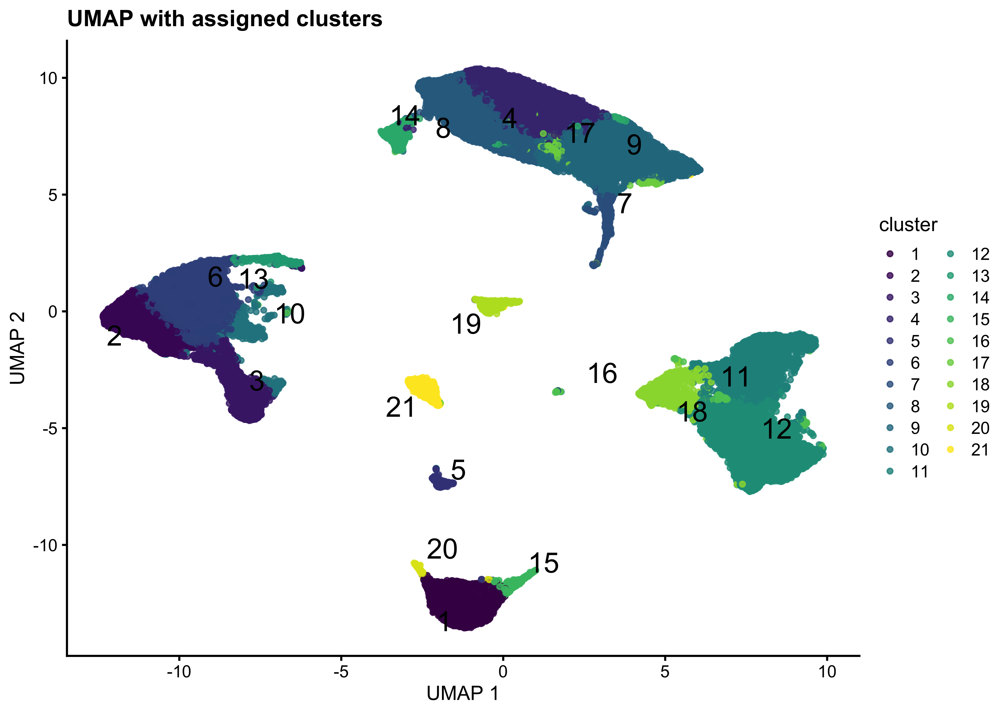
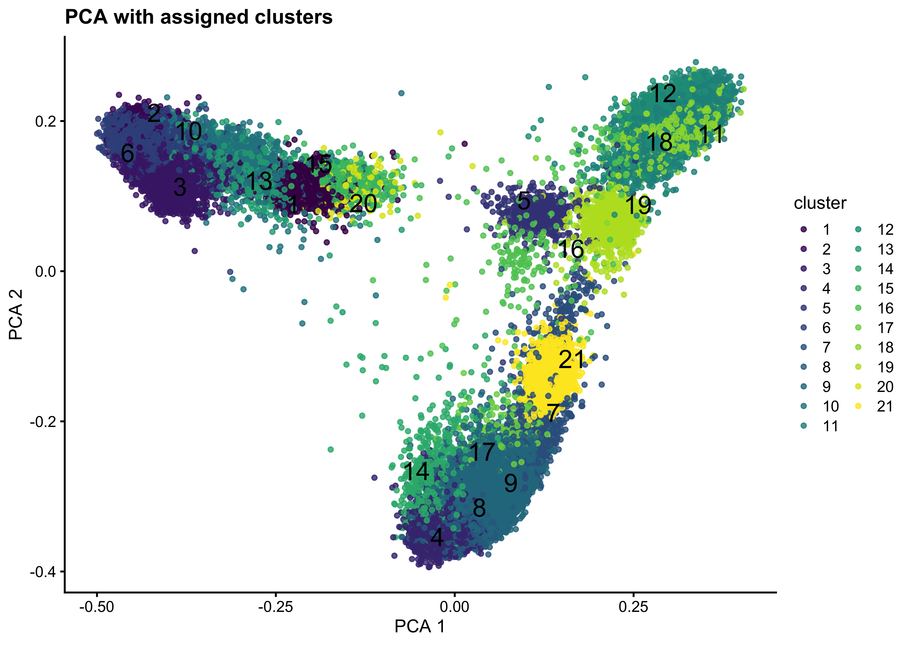

Clustering
05_Clustering
SarahL.
Jun 26 2024 09:32:46
Last updated: 2024-06-26
Checks: 7 0
Knit directory: RA_SingleCellAnalysis/
This reproducible R Markdown analysis was created with workflowr (version 1.7.1). The Checks tab describes the reproducibility checks that were applied when the results were created. The Past versions tab lists the development history.
Great! Since the R Markdown file has been committed to the Git repository, you know the exact version of the code that produced these results.
Great job! The global environment was empty. Objects defined in the global environment can affect the analysis in your R Markdown file in unknown ways. For reproduciblity it’s best to always run the code in an empty environment.
The command set.seed(20240328) was run prior to running
the code in the R Markdown file. Setting a seed ensures that any results
that rely on randomness, e.g. subsampling or permutations, are
reproducible.
Great job! Recording the operating system, R version, and package versions is critical for reproducibility.
Nice! There were no cached chunks for this analysis, so you can be confident that you successfully produced the results during this run.
Great job! Using relative paths to the files within your workflowr project makes it easier to run your code on other machines.
Great! You are using Git for version control. Tracking code development and connecting the code version to the results is critical for reproducibility.
The results in this page were generated with repository version 5887ab5. See the Past versions tab to see a history of the changes made to the R Markdown and HTML files.
Note that you need to be careful to ensure that all relevant files for
the analysis have been committed to Git prior to generating the results
(you can use wflow_publish or
wflow_git_commit). workflowr only checks the R Markdown
file, but you know if there are other scripts or data files that it
depends on. Below is the status of the Git repository when the results
were generated:
Ignored files:
Ignored: .DS_Store
Ignored: .Rhistory
Ignored: .Rproj.user/
Ignored: analysis/.DS_Store
Ignored: data/.DS_Store
Ignored: data/cellbender_data_h5/
Ignored: data/spatial/
Ignored: output/00_DoubletDetection.rds
Ignored: output/00_sce_DataPreparation.rds
Ignored: output/01_sce_QualityControl.rds
Ignored: output/01_sce_QualityControl_cellfiltered.rds
Ignored: output/02_sce_DimensionalityReduction.rds
Ignored: output/03_sce_Integration_Batchelor.rds
Ignored: output/03_sce_Integration_Harmony.rds
Ignored: output/04_sce_CellCycle.rds
Ignored: output/05_sce_CelltypeAnnotation.rds
Ignored: output/05_sce_Clustering.rds
Ignored: output/06_sce_CelltypeAnnotation.rds
Ignored: output/07_sce_SC_Bcell.rds
Ignored: output/07_sce_SC_Dendritic.rds
Ignored: output/07_sce_SC_Dendritic_Anno.rds
Ignored: output/07_sce_SC_Endothelial.rds
Ignored: output/07_sce_SC_Endothelial_Anno.rds
Ignored: output/07_sce_SC_Fibroblast.rds
Ignored: output/07_sce_SC_Fibroblast_Anno.rds
Ignored: output/07_sce_SC_Macrophage.rds
Ignored: output/07_sce_SC_Macrophage_Anno.rds
Ignored: output/07_sce_SC_Mast.rds
Ignored: output/07_sce_SC_Merge.rds
Ignored: output/07_sce_SC_Neutrophil.rds
Ignored: output/07_sce_SC_Plasma.rds
Ignored: output/07_sce_SC_SmoothMuscle.rds
Ignored: output/07_sce_SC_Tcell.rds
Ignored: output/07_sce_SC_Tcell_Anno.rds
Ignored: output/08_DifferentialAbundance_miloR.rds
Ignored: output/10_sce_CellChat_Knee.rds
Ignored: output/10_sce_CellChat_MCP.rds
Ignored: output/10_sce_CellChat_Wrist.rds
Ignored: output/Cluster_Marker_Genes.xlsx
Ignored: output/Knee_KvM.csv
Ignored: output/Knee_KvW.csv
Ignored: output/MAST_output/
Ignored: output/MCP_KvM.csv
Ignored: output/MCP_MvW.csv
Ignored: output/ManualAnno_L0_Wilcoxon.xlsx
Ignored: output/ManualAnno_L1_Wilcoxon.xlsx
Ignored: output/Wrist_KvW.csv
Ignored: output/Wrist_MvW.csv
Ignored: renv/.DS_Store
Ignored: renv/library/
Ignored: renv/staging/
Untracked files:
Untracked: analysis/07_SubClustering_Merge.Rmd
Untracked: analysis/08_DifferentialExpression_EdgeR.Rmd
Untracked: analysis/08_DifferentialExpression_MAST.Rmd
Untracked: analysis/08_DifferentialExpression_Pseudobulk.Rmd
Untracked: analysis/08_DifferentialExpression_muscat.Rmd
Untracked: analysis/09_DifferentialAbundance_miloR.Rmd
Untracked: analysis/10_EnrichmentAnalysis.Rmd
Untracked: analysis/11_CellChat.Rmd
Untracked: analysis/99_Plotting.Rmd
Untracked: analysis/Spatial_hand.Rmd
Untracked: analysis/Spatial_knee.Rmd
Unstaged changes:
Modified: analysis/02_DimensionalityReduction.Rmd
Modified: analysis/03_Integration_Batchelor.Rmd
Modified: analysis/06_CelltypeAnnotation.Rmd
Deleted: analysis/07_DifferentialExpression_EdgeR.Rmd
Deleted: analysis/07_DifferentialExpression_MAST.Rmd
Deleted: analysis/07_DifferentialExpression_Pseudobulk.Rmd
Deleted: analysis/07_DifferentialExpression_muscat.Rmd
Modified: analysis/07_SubClustering.Rmd
Modified: analysis/07_SubClustering_Annotation.Rmd
Deleted: analysis/08_DifferentialAbundance_miloR.Rmd
Deleted: analysis/09_EnrichmentAnalysis.Rmd
Deleted: analysis/10_Plotting.Rmd
Deleted: analysis/Ege_06_SC_Fibroblast.Rmd
Deleted: analysis/OLD06_SubClustering.Rmd
Modified: code/standard_libraries.R
Modified: renv.lock
Note that any generated files, e.g. HTML, png, CSS, etc., are not included in this status report because it is ok for generated content to have uncommitted changes.
These are the previous versions of the repository in which changes were
made to the R Markdown (analysis/05_Clustering.Rmd) and
HTML (docs/05_Clustering.html) files. If you’ve configured
a remote Git repository (see ?wflow_git_remote), click on
the hyperlinks in the table below to view the files as they were in that
past version.
| File | Version | Author | Date | Message |
|---|---|---|---|---|
| html | 299e5e4 | sarloet | 2024-06-06 | fix |
| Rmd | 8be1325 | sarloet | 2024-06-05 | renv |
Clustering
Setup
Standard packages
library(here)
source(here("code", "standard_libraries.R"))Additional Packages
#Load Packages
suppressPackageStartupMessages({
library(reticulate)
library(bluster)
})Set Parameter
set.seed(123)
bpp <- BiocParallel::MulticoreParam(parallel::detectCores()-1, RNGseed=123)
path <- here::here()Load Data
## RA DATASET
sce <- readRDS(file = paste0(path,'/output/04_sce_CellCycle.rds'))
sce.cluster <- sceExplore Dataset
#Dimensions of count matrix
dim(sce.cluster)[1] 30488 64639Clustering
Louvain Clustering
#Louvain Clustering
set.seed(123)
colData(sce.cluster)$louvain <- clusterCells(sce.cluster, use.dimred = "MNN_reduced", BLUSPARAM = SNNGraphParam(k=15,cluster.fun="louvain",BPPARAM =bpp))
data.frame(as.list(table(colData(sce.cluster)$louvain))) Leiden Clustering
#Leiden Clustering
set.seed(123)
colData(sce.cluster)$leiden <- clusterCells(sce.cluster, use.dimred = "MNN_reduced", BLUSPARAM = SNNGraphParam(k=70,cluster.fun="leiden",BPPARAM =bpp))
data.frame(as.list(table(colData(sce.cluster)$leiden)))Walktrap Clustering
#Walktrap Clustering
set.seed(123)
colData(sce.cluster)$walktrap <- clusterRows(reducedDim(sce.cluster, "MNN_reduced"),TwoStepParam(KmeansParam(centers=10000, nstart = 5, iter.max = 100), NNGraphParam(k=10,cluster.fun="walktrap",BPPARAM=bpp)))
#colData(sce)$walktrap <- clusterCells(sce, use.dimred = "MNN", BLUSPARAM = SNNGraphParam(k=20,cluster.fun="walktrap", BPPARAM=bpp))
data.frame(as.list(table(colData(sce.cluster)$walktrap)))Clustering Plots
methods <- c("louvain","leiden","walktrap")PCA Plots
for (i in methods){
cat(paste0("#### ",i, "\n"))
print(
plotReducedDim(sce.cluster, dimred="MNN_reduced", colour_by=i ,text_by=i,point_alpha=0.8,point_size=0.1) +
ggtitle(paste0("PCA with ",i," clusters"))+
labs( x='PCA 1', y='PCA 2' )
)
cat(' \n \n')
}


UMAP Plots
for (i in methods){
cat(paste0("#### ", i, "\n"))
print(
plotReducedDim(sce.cluster, dimred="MNN_UMAP_reduced", colour_by=i,text_by=i,point_alpha=0.8,point_size=0.1) +
ggtitle(paste0("UMAP with ",i," clusters"))+
labs( x='UMAP 1', y='UMAP 2' )
)
cat(' \n \n')
}


Silhouette Plots
The silhouette width (so named after the look of the traditional graph for plotting the results) is a measure of how closely related cells within cluster are to one another versus how closely related cells in the cluster are to cells in other clusters. This allows us to assess cluster separation.
for (i in methods){
cat(paste0("#### ", i, "\n"))
## Silhouette plot
sil.approx <- approxSilhouette(reducedDim(sce.cluster, "MNN_reduced"), clusters=colData(sce.cluster)[,i])
sil.data <- as.data.frame(sil.approx)
sil.data$closest <- factor(ifelse(sil.data$width > 0, colData(sce.cluster)[,i], sil.data$other))
sil.data$cluster <- colData(sce.cluster)[,i]
print(
ggplot(sil.data, aes(x=cluster, y=width, colour=closest))+
ggbeeswarm::geom_quasirandom(method="smiley")+
ggtitle(paste0("Silhouette plot ",i," Clustering"))+
theme_classic() +
theme(panel.grid.major.x = element_blank(),panel.grid.minor.x = element_blank())
)
cat(' \n \n')
}


Barplots Plots Absolute Cell Counts
Frequencies of cells in clusters per Sample
for (i in methods){
cat(paste0("#### ", i, "\n"))
ClusterInfo <- as.data.frame(colData(sce.cluster)) %>%
group_by_at(c(i, "Sample")) %>%
summarise(cells = n(),.groups = 'drop')
print(
ggplot(data=ClusterInfo, aes_string(x="Sample",y="cells", fill=i)) +
geom_bar(stat="identity", position="stack") +
labs(title="Absolute comparison nr Cells in Cluster",subtitle="Per Sample",x="",y="Number of cells")+
theme(axis.text.x = element_text(angle = 45,hjust=1), axis.line = element_line(colour = "black"), panel.background = element_rect(fill = NA)) +
scale_y_continuous(expand = c(0,0))
)
cat(' \n \n')
}


Barplots Plots Relative Cell Counts
Frequencies of cells in clusters per Sample
for (i in methods){
cat(paste0("#### ", i, "\n"))
ClusterInfo <- as.data.frame(colData(sce.cluster)) %>%
group_by_at(c(i, "Sample")) %>%
summarise(cells = n(),.groups = 'drop')
print(
ggplot(data=ClusterInfo,aes_string(x="Sample",y="cells", fill=i)) +
geom_bar(stat="identity", position="fill") +
labs(title="Relative comparison nr Cells in Cluster",subtitle="Per Sample",x="",y="Number of cells")+
theme(axis.text.x = element_text(angle = 45,hjust=1), axis.line = element_line(colour = "black"), panel.background = element_rect(fill = NA))+
scale_y_continuous(expand = c(0,0))
)
cat(' \n \n')
}


Set clustering to use downstream
## Set main clustering for downstream use also as colLabels
##leiden or louvain or walktrap
colData(sce)$cluster<- colData(sce.cluster)$leiden
#Set as collabel
colLabels(sce)<- colData(sce)$clusterUMAP
plotReducedDim(sce, dimred="MNN_UMAP_reduced", colour_by="cluster",text_by="cluster",point_alpha=0.8,point_size=1) +
ggtitle("UMAP with assigned clusters")+
labs( x='UMAP 1', y='UMAP 2' )
| Version | Author | Date |
|---|---|---|
| 299e5e4 | sarloet | 2024-06-06 |
PCA
plotReducedDim(sce, dimred="MNN_reduced", colour_by="cluster",text_by="cluster",point_alpha=0.8,point_size=1) +
ggtitle("PCA with assigned clusters")+
labs( x='PCA 1', y='PCA 2' )
| Version | Author | Date |
|---|---|---|
| 299e5e4 | sarloet | 2024-06-06 |
Save the dataset
saveRDS(sce, file =paste0(path,'/output/05_sce_Clustering.rds'))
sessionInfo()R version 4.3.3 (2024-02-29)
Platform: x86_64-apple-darwin20 (64-bit)
Running under: macOS Sonoma 14.4.1
Matrix products: default
BLAS: /Library/Frameworks/R.framework/Versions/4.3-x86_64/Resources/lib/libRblas.0.dylib
LAPACK: /Library/Frameworks/R.framework/Versions/4.3-x86_64/Resources/lib/libRlapack.dylib; LAPACK version 3.11.0
locale:
[1] en_US.UTF-8/en_US.UTF-8/en_US.UTF-8/C/en_US.UTF-8/en_US.UTF-8
time zone: Europe/Warsaw
tzcode source: internal
attached base packages:
[1] stats4 stats graphics grDevices datasets utils methods
[8] base
other attached packages:
[1] bluster_1.12.0 reticulate_1.37.0
[3] tidyr_1.3.1 org.Hs.eg.db_3.18.0
[5] AnnotationDbi_1.64.1 clusterProfiler_4.10.1
[7] viridis_0.6.5 viridisLite_0.4.2
[9] gridExtra_2.3 scran_1.30.2
[11] scater_1.30.1 scuttle_1.12.0
[13] SingleCellExperiment_1.24.0 SummarizedExperiment_1.32.0
[15] Biobase_2.62.0 GenomicRanges_1.54.1
[17] GenomeInfoDb_1.38.8 IRanges_2.36.0
[19] S4Vectors_0.40.2 BiocGenerics_0.48.1
[21] MatrixGenerics_1.14.0 matrixStats_1.3.0
[23] dplyr_1.1.4 ggplot2_3.5.1
[25] BiocParallel_1.36.0 here_1.0.1
[27] workflowr_1.7.1
loaded via a namespace (and not attached):
[1] splines_4.3.3 later_1.3.2
[3] bitops_1.0-7 ggplotify_0.1.2
[5] tibble_3.2.1 polyclip_1.10-6
[7] lifecycle_1.0.4 edgeR_4.0.16
[9] rprojroot_2.0.4 processx_3.8.4
[11] lattice_0.22-5 MASS_7.3-60.0.1
[13] magrittr_2.0.3 limma_3.58.1
[15] sass_0.4.9 rmarkdown_2.27
[17] jquerylib_0.1.4 yaml_2.3.8
[19] metapod_1.10.1 httpuv_1.6.15
[21] cowplot_1.1.3 DBI_1.2.2
[23] RColorBrewer_1.1-3 abind_1.4-5
[25] zlibbioc_1.48.2 purrr_1.0.2
[27] ggraph_2.2.1 RCurl_1.98-1.14
[29] yulab.utils_0.1.4 tweenr_2.0.3
[31] git2r_0.33.0 GenomeInfoDbData_1.2.11
[33] enrichplot_1.22.0 ggrepel_0.9.5
[35] irlba_2.3.5.1 tidytree_0.4.6
[37] dqrng_0.4.0 DelayedMatrixStats_1.24.0
[39] codetools_0.2-19 DelayedArray_0.28.0
[41] DOSE_3.28.2 ggforce_0.4.2
[43] tidyselect_1.2.1 aplot_0.2.2
[45] farver_2.1.2 ScaledMatrix_1.10.0
[47] jsonlite_1.8.8 BiocNeighbors_1.20.2
[49] tidygraph_1.3.1 tools_4.3.3
[51] treeio_1.26.0 Rcpp_1.0.12
[53] glue_1.7.0 SparseArray_1.2.4
[55] xfun_0.44 qvalue_2.34.0
[57] withr_3.0.0 BiocManager_1.30.23
[59] fastmap_1.2.0 fansi_1.0.6
[61] callr_3.7.6 digest_0.6.35
[63] rsvd_1.0.5 R6_2.5.1
[65] gridGraphics_0.5-1 colorspace_2.1-0
[67] GO.db_3.18.0 RSQLite_2.3.6
[69] utf8_1.2.4 generics_0.1.3
[71] renv_1.0.7 data.table_1.15.4
[73] graphlayouts_1.1.1 httr_1.4.7
[75] S4Arrays_1.2.1 scatterpie_0.2.2
[77] whisker_0.4.1 pkgconfig_2.0.3
[79] gtable_0.3.5 blob_1.2.4
[81] XVector_0.42.0 shadowtext_0.1.3
[83] htmltools_0.5.8.1 fgsea_1.28.0
[85] scales_1.3.0 png_0.1-8
[87] ggfun_0.1.4 knitr_1.45
[89] rstudioapi_0.16.0 reshape2_1.4.4
[91] nlme_3.1-164 cachem_1.1.0
[93] stringr_1.5.1 parallel_4.3.3
[95] vipor_0.4.7 HDO.db_0.99.1
[97] pillar_1.9.0 grid_4.3.3
[99] vctrs_0.6.5 promises_1.3.0
[101] BiocSingular_1.18.0 beachmat_2.18.1
[103] cluster_2.1.6 beeswarm_0.4.0
[105] evaluate_0.23 cli_3.6.2
[107] locfit_1.5-9.9 compiler_4.3.3
[109] rlang_1.1.3 crayon_1.5.2
[111] labeling_0.4.3 ps_1.7.6
[113] getPass_0.2-4 plyr_1.8.9
[115] fs_1.6.4 ggbeeswarm_0.7.2
[117] stringi_1.8.4 munsell_0.5.1
[119] Biostrings_2.70.3 lazyeval_0.2.2
[121] GOSemSim_2.28.1 Matrix_1.6-5
[123] patchwork_1.2.0 sparseMatrixStats_1.14.0
[125] bit64_4.0.5 KEGGREST_1.42.0
[127] statmod_1.5.0 highr_0.10
[129] igraph_2.0.3 memoise_2.0.1
[131] bslib_0.7.0 ggtree_3.10.1
[133] fastmatch_1.1-4 bit_4.0.5
[135] gson_0.1.0 ape_5.8